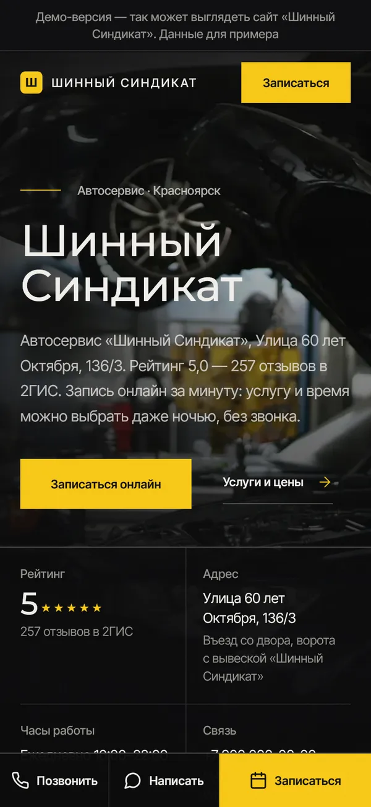
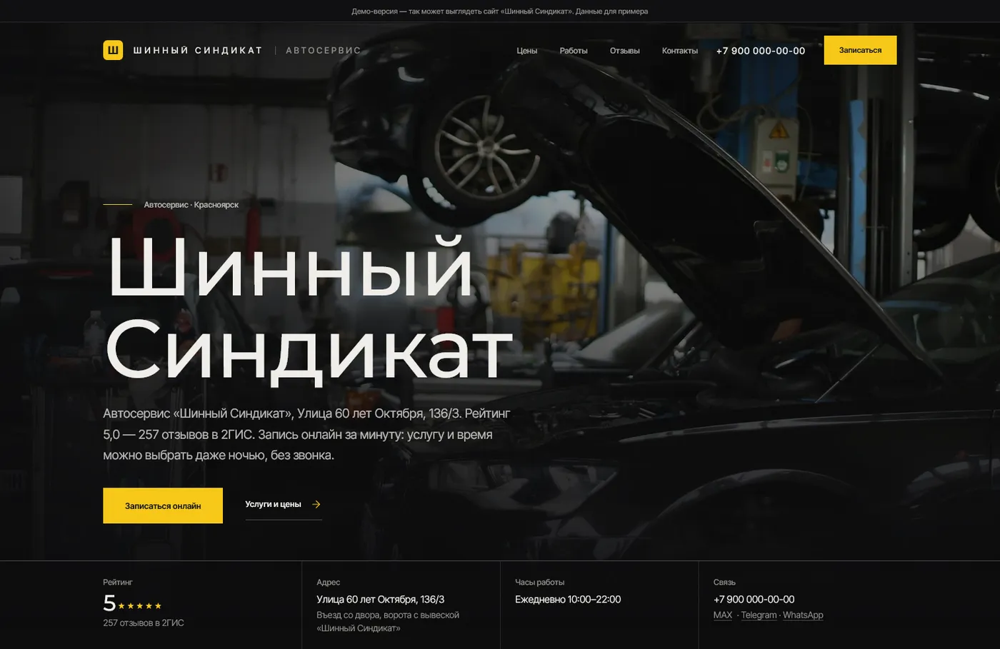
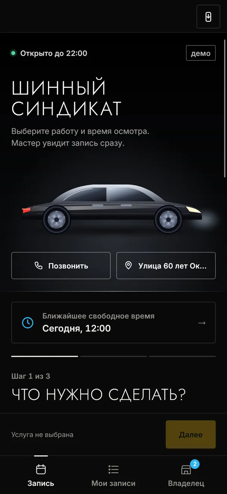
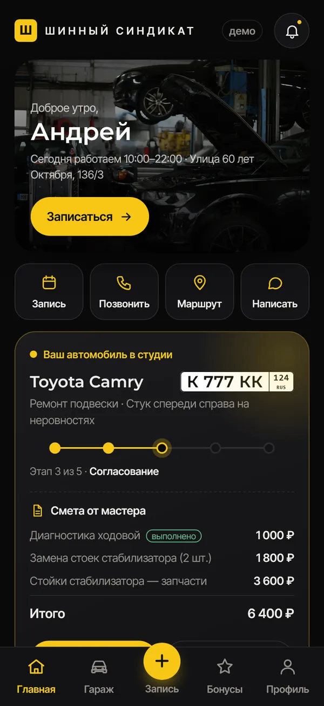
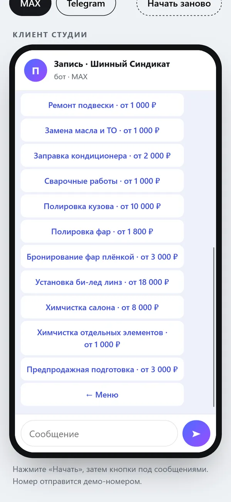

Сайт, запись и приложение в одном стиле
Улица 60 лет Октября, 136/3
Мы студия «Точка записи» из Красноярска. Собрали для вас набросок: как «Шинный Синдикат» может выглядеть в интернете — с вашим названием, адресом и рейтингом. Это пара минут, ничего не нужно устанавливать.


Набросок на основе нашей работы: тексты, фото и цены будут ваши. Стиль подбираем под интерьер и характер места.

Услуга, мастер, время за минуту. Вам приходит уведомление в MAX или Telegram.

Иконка на экране: запись, бонусная карта с QR, подарочные сертификаты.

Запись в переписке, напоминание накануне, после визита — просьба об отзыве в 2ГИС.
Поставьте свой средний чек и сколько новых записей в месяц принесёт сайт. Это не обещание, а простая арифметика — цифры ваши.
Сайт под ваш бренд, тексты, Яндекс, скорость. 5 дней.
Плюс онлайн-запись и уведомления. 3 месяца сопровождения в подарок.
Сайт, запись, приложение и бот. 3 месяца сопровождения в подарок.
Или сайт по подписке: 0 ₽ за разработку и 4 900 ₽ в месяц. Готовое демо с вашими фото и ценами покажем до оплаты.
Оставляем: встроим вашу запись в сайт, чтобы человек видел ваши фото и отзывы, а записывался туда же. Ничего переносить не нужно.
Около 15 минут: ответить на 5 вопросов, прислать фото и прайс. Тексты, дизайн, настройку и публикацию делаем мы.
Демо с вашими данными — 2 дня, бесплатно. Готовый сайт — от 3 до 7 дней после «да».
Демо ни к чему не обязывает: не подошло — просто скажите, вы ничего не должны.
Вам: домен оформляем на вас, все файлы и доступы передаём.
Делаю сайты, онлайн-запись и приложения для бизнеса Красноярского края. Вы общаетесь напрямую с тем, кто делает, без менеджеров. Работаю официально как самозанятый — чек на каждую оплату.